Chapter 2 Prepare Problem
2.1 Descriptive statistics
# load the library
library(mlbench)
# load the dataset
data(PimaIndiansDiabetes)
# display first 20 rows of data
head(PimaIndiansDiabetes, n=20)## pregnant glucose pressure triceps insulin mass pedigree age diabetes
## 1 6 148 72 35 0 33.6 0.627 50 pos
## 2 1 85 66 29 0 26.6 0.351 31 neg
## 3 8 183 64 0 0 23.3 0.672 32 pos
## 4 1 89 66 23 94 28.1 0.167 21 neg
## 5 0 137 40 35 168 43.1 2.288 33 pos
## 6 5 116 74 0 0 25.6 0.201 30 neg
## 7 3 78 50 32 88 31.0 0.248 26 pos
## 8 10 115 0 0 0 35.3 0.134 29 neg
## 9 2 197 70 45 543 30.5 0.158 53 pos
## 10 8 125 96 0 0 0.0 0.232 54 pos
## 11 4 110 92 0 0 37.6 0.191 30 neg
## 12 10 168 74 0 0 38.0 0.537 34 pos
## 13 10 139 80 0 0 27.1 1.441 57 neg
## 14 1 189 60 23 846 30.1 0.398 59 pos
## 15 5 166 72 19 175 25.8 0.587 51 pos
## 16 7 100 0 0 0 30.0 0.484 32 pos
## 17 0 118 84 47 230 45.8 0.551 31 pos
## 18 7 107 74 0 0 29.6 0.254 31 pos
## 19 1 103 30 38 83 43.3 0.183 33 neg
## 20 1 115 70 30 96 34.6 0.529 32 poslibrary(datasets)
# load the iris dataset
data(iris)
# summarize the dataset
summary(iris)## Sepal.Length Sepal.Width Petal.Length Petal.Width
## Min. :4.300 Min. :2.000 Min. :1.000 Min. :0.100
## 1st Qu.:5.100 1st Qu.:2.800 1st Qu.:1.600 1st Qu.:0.300
## Median :5.800 Median :3.000 Median :4.350 Median :1.300
## Mean :5.843 Mean :3.057 Mean :3.758 Mean :1.199
## 3rd Qu.:6.400 3rd Qu.:3.300 3rd Qu.:5.100 3rd Qu.:1.800
## Max. :7.900 Max. :4.400 Max. :6.900 Max. :2.500
## Species
## setosa :50
## versicolor:50
## virginica :50
##
##
## data(BostonHousing)
# list types for each attribute
sapply(BostonHousing, class)## crim zn indus chas nox rm age
## "numeric" "numeric" "numeric" "factor" "numeric" "numeric" "numeric"
## dis rad tax ptratio b lstat medv
## "numeric" "numeric" "numeric" "numeric" "numeric" "numeric" "numeric"# Class Distribution
# load the libraries
library(mlbench)
# load the dataset
data(PimaIndiansDiabetes)
# distribution of class variable
y <- PimaIndiansDiabetes$diabetes
cbind(freq=table(y), percentage=prop.table(table(y))*100)## freq percentage
## neg 500 65.10417
## pos 268 34.89583# Dimensions of your dataset
dim(PimaIndiansDiabetes)## [1] 768 9# summarize the dataset
summary(PimaIndiansDiabetes)## pregnant glucose pressure triceps
## Min. : 0.000 Min. : 0.0 Min. : 0.00 Min. : 0.00
## 1st Qu.: 1.000 1st Qu.: 99.0 1st Qu.: 62.00 1st Qu.: 0.00
## Median : 3.000 Median :117.0 Median : 72.00 Median :23.00
## Mean : 3.845 Mean :120.9 Mean : 69.11 Mean :20.54
## 3rd Qu.: 6.000 3rd Qu.:140.2 3rd Qu.: 80.00 3rd Qu.:32.00
## Max. :17.000 Max. :199.0 Max. :122.00 Max. :99.00
## insulin mass pedigree age
## Min. : 0.0 Min. : 0.00 Min. :0.0780 Min. :21.00
## 1st Qu.: 0.0 1st Qu.:27.30 1st Qu.:0.2437 1st Qu.:24.00
## Median : 30.5 Median :32.00 Median :0.3725 Median :29.00
## Mean : 79.8 Mean :31.99 Mean :0.4719 Mean :33.24
## 3rd Qu.:127.2 3rd Qu.:36.60 3rd Qu.:0.6262 3rd Qu.:41.00
## Max. :846.0 Max. :67.10 Max. :2.4200 Max. :81.00
## diabetes
## neg:500
## pos:268
##
##
##
## # Calculate Skewness
# load the dataset
data(PimaIndiansDiabetes)
# calculate skewness for each variable
#skew <- apply(PimaIndiansDiabetes[,1:8], 2, skewness)
# display skewness, larger/smaller deviations from 0 show more skew
#print(skew)
# calculate standard deviation for all attributes
sapply(PimaIndiansDiabetes[,1:8], sd)## pregnant glucose pressure triceps insulin mass
## 3.3695781 31.9726182 19.3558072 15.9522176 115.2440024 7.8841603
## pedigree age
## 0.3313286 11.7602315# Pair-wise correlations using pearson spearman coefficients
correlations <- cor(PimaIndiansDiabetes[,1:8], method="spearman")
# display the correlation matrix
print(correlations)## pregnant glucose pressure triceps insulin
## pregnant 1.0000000000 0.13073352 0.185126732 -0.08522231 -0.126722724
## glucose 0.1307335241 1.00000000 0.235190613 0.06002215 0.213205805
## pressure 0.1851267321 0.23519061 1.000000000 0.12648587 -0.006770572
## triceps -0.0852223076 0.06002215 0.126485871 1.00000000 0.541000137
## insulin -0.1267227242 0.21320580 -0.006770572 0.54100014 1.000000000
## mass 0.0001321469 0.23114119 0.292870430 0.44361451 0.192725681
## pedigree -0.0432415012 0.09129336 0.030046335 0.18039048 0.221150492
## age 0.6072163388 0.28504472 0.350894593 -0.06679492 -0.114212917
## mass pedigree age
## pregnant 0.0001321469 -0.04324150 0.60721634
## glucose 0.2311411943 0.09129336 0.28504472
## pressure 0.2928704303 0.03004633 0.35089459
## triceps 0.4436145083 0.18039048 -0.06679492
## insulin 0.1927256806 0.22115049 -0.11421292
## mass 1.0000000000 0.14119203 0.13118588
## pedigree 0.1411920297 1.00000000 0.04290859
## age 0.1311858805 0.04290859 1.000000002.2 Data visualizations Univariate
# Univariate Histograms
# load the data
data(iris)
# create histograms for each attribute
par(mfrow=c(1,4))
for(i in 1:4) {
hist(iris[,i], main=names(iris)[i])
}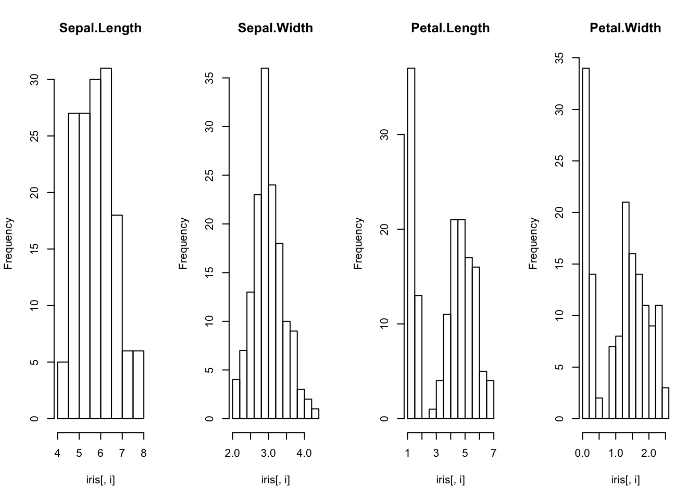
# Univariate Density Plots
# load dataset
data(iris)
# create a panel of simpler density plots by attribute
par(mfrow=c(1,4))
for(i in 1:4) {
plot(density(iris[,i]), main=names(iris)[i])
}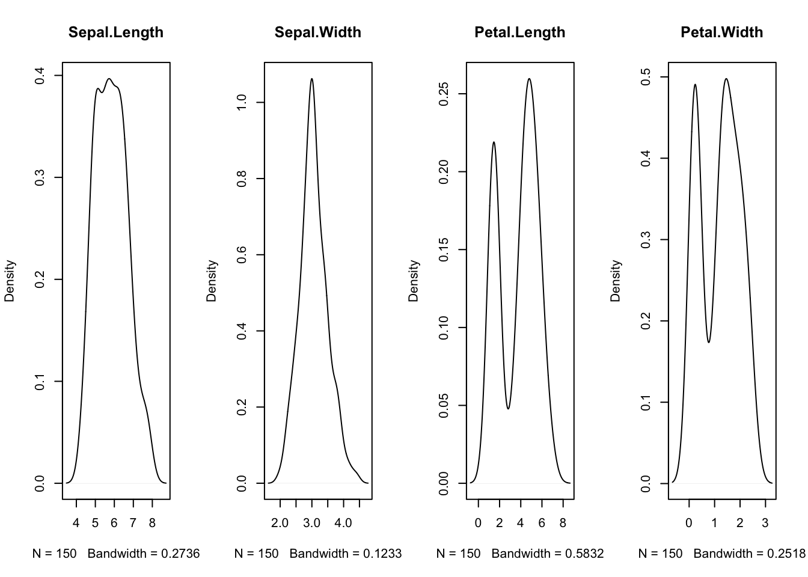
# Univarate Box And Whisker Plots
# load dataset
data(iris)
# Create separate boxplots for each attribute
par(mfrow=c(1,4))
for(i in 1:4) {
boxplot(iris[,i], main=names(iris)[i])
}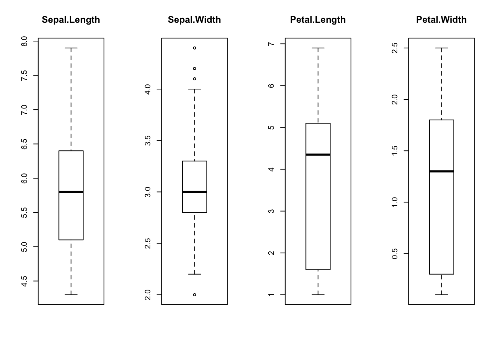
# Plot missing data
# load libraries
library(Amelia)
library(mlbench)
# load dataset
data(Soybean)
# create a missing map
missmap(Soybean, col=c("black", "grey"), legend=FALSE)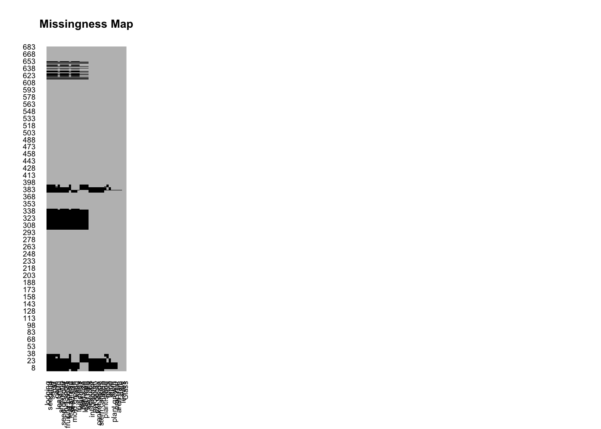 ## Data visualizations multivariate
# Create a density plot for each variable-class combination.
# load the library
library(caret)
# load the data
data(iris)
# density plots for each attribute by class value
x <- iris[,1:4]
y <- iris[,5]
scales <- list(x=list(relation="free"), y=list(relation="free"))
featurePlot(x=x, y=y, plot="density", scales=scales)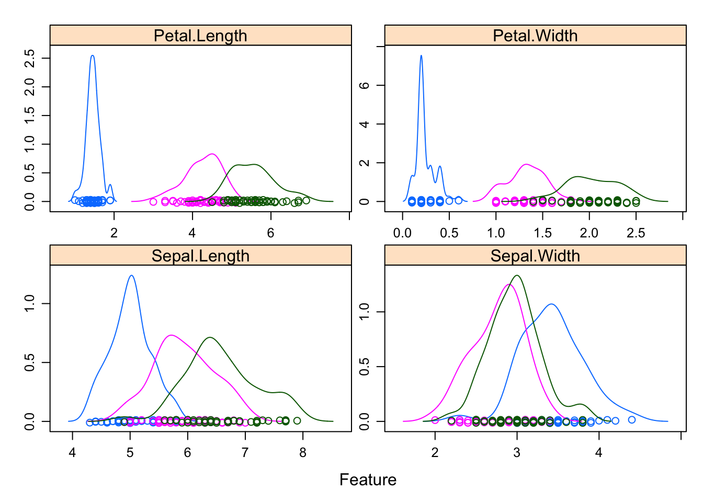
# Multivariate Scatterplot Matrix By Class
# load the data
data(iris)
# pair-wise scatterplots colored by class
pairs(Species~., data=iris, col=iris$Species)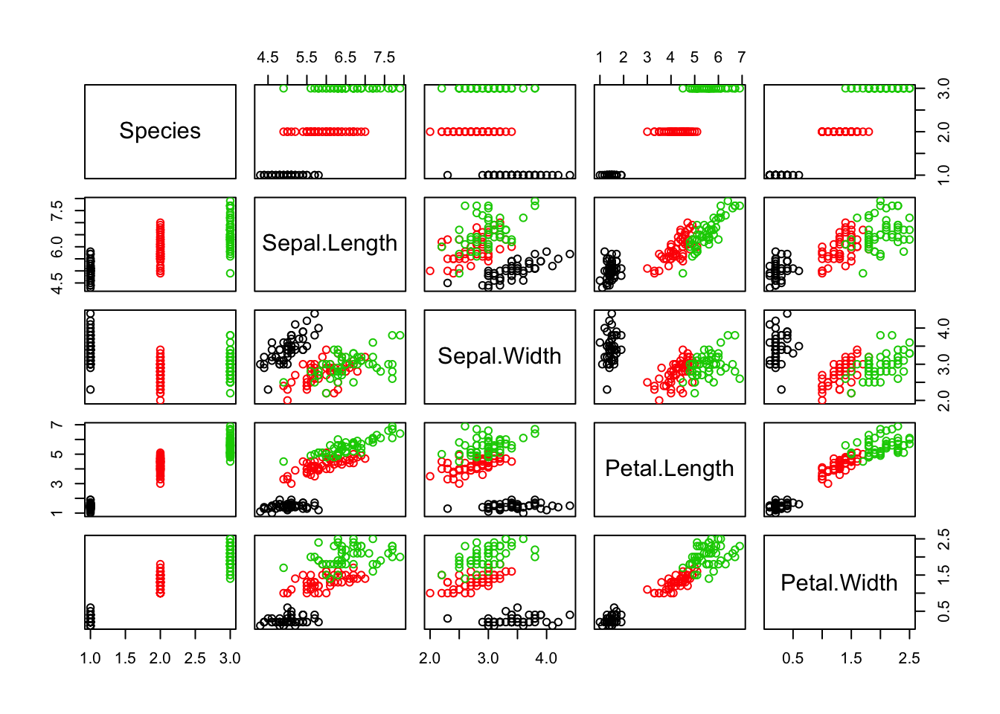
# Create a box and whisker plots for each variable organized by class.
# load the iris dataset
data(iris)
# box and whisker plots for each attribute by class value
x <- iris[,1:4]
y <- iris[,5]
featurePlot(x=x, y=y, plot="box")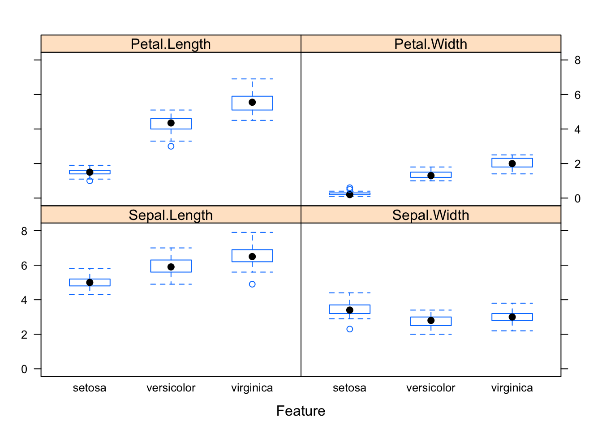
# Multivariate Scatterplot Matrix
# load the data
data(iris)
# pair-wise scatterplots of all 4 attributes
pairs(iris)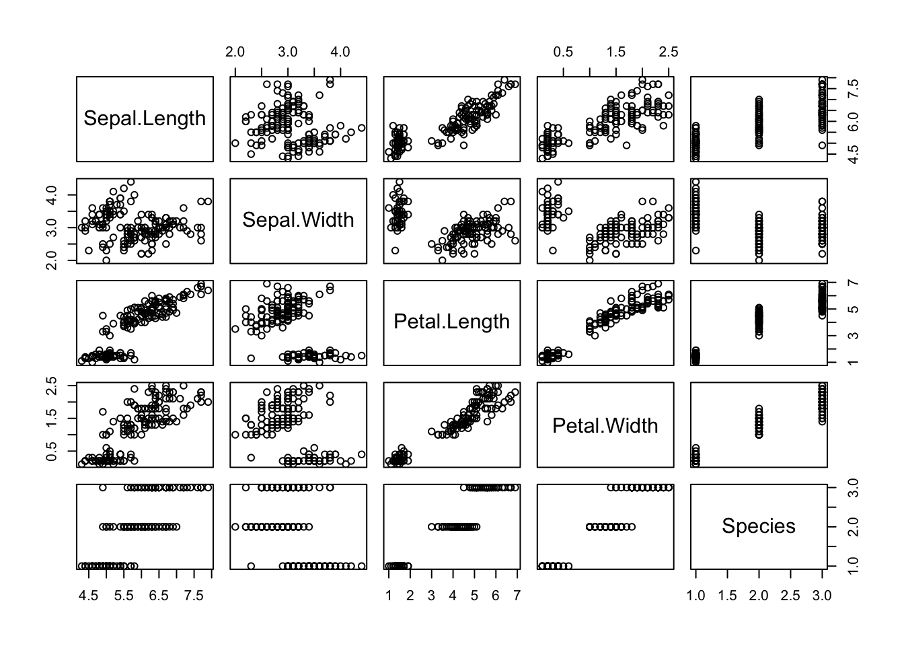
# Correlation Plot
# load library
library(corrplot)
# load the data
data(iris)
# calculate correlations
correlations <- cor(iris[,1:4])
# create correlation plot
corrplot(correlations, method="circle")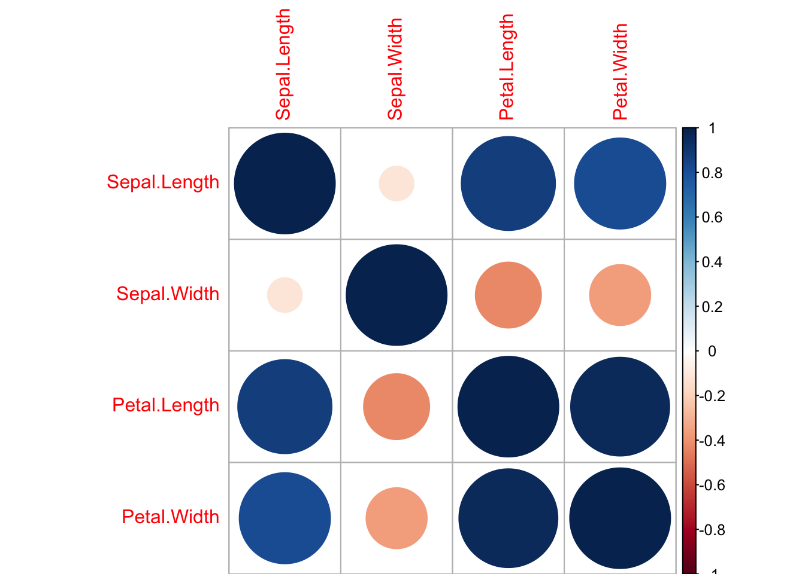
2.3 Data visualizations projection
# Self Organizing Map (Kohonen)
# load the library
library("kohonen")
# load the dataset
data(iris)
# split input and output
x <- data.matrix(iris[,1:4])
y <- iris[,5]
# set the random seed for repetable results
set.seed(7)
# create a map of the x values
iris_map <- som(x, grid=somgrid(5, 5, "hexagonal"))
# plot the map
plot(iris_map)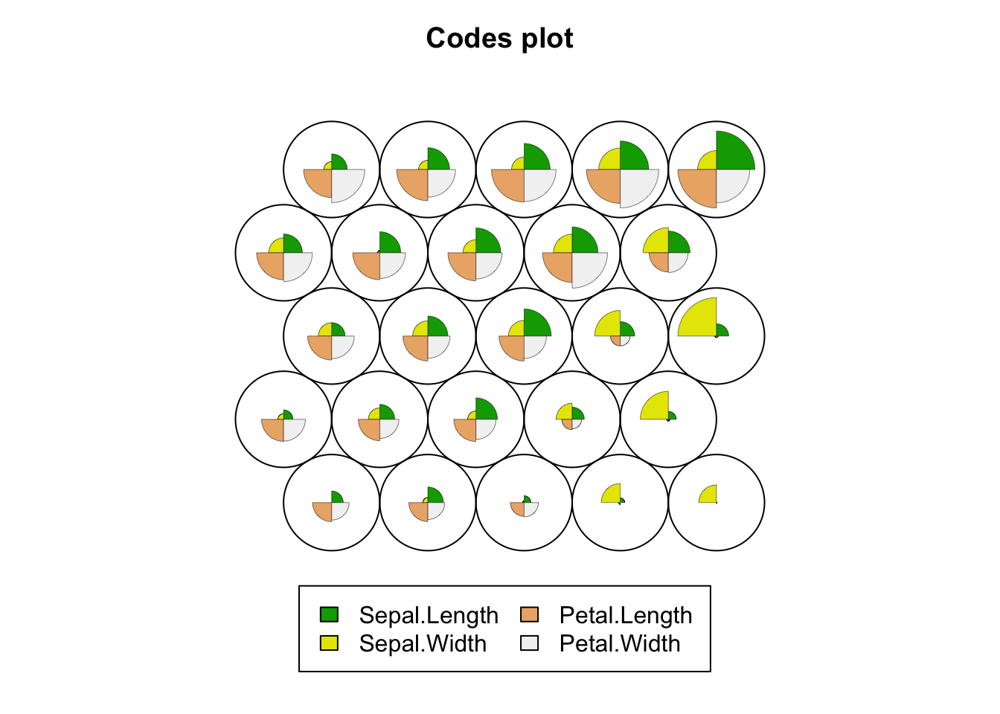
# TODO label the map by class
# Sammons Mapping
# load library
library(MASS)
# load dataset
data(iris)
# remove duplicates
clean <- unique(iris)
# split out numerical inputs
x <- data.matrix(clean[, 1:4])
# create a sammon mapping
mapping <- sammon(dist(x))## Initial stress : 0.00678
## stress after 10 iters: 0.00404, magic = 0.500
## stress after 12 iters: 0.00402# plot mapping by class
plot(mapping$points, type="n")
text(mapping$points, labels=clean[,5])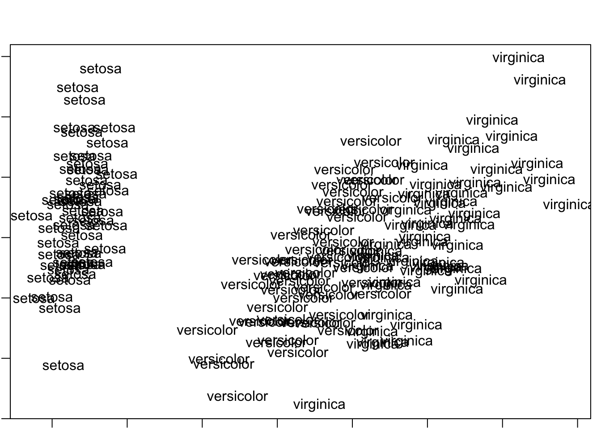
# TODO colour dots by class
# Principal Component Analysis
# load the dataset
data(iris)
# separate numerical inputs
x <- data.matrix(iris[,1:4])
y <- iris[,5]
# calculate components
components <- prcomp(x, center=TRUE, scale=TRUE)
# display components
print(components)## Standard deviations (1, .., p=4):
## [1] 1.7083611 0.9560494 0.3830886 0.1439265
##
## Rotation (n x k) = (4 x 4):
## PC1 PC2 PC3 PC4
## Sepal.Length 0.5210659 -0.37741762 0.7195664 0.2612863
## Sepal.Width -0.2693474 -0.92329566 -0.2443818 -0.1235096
## Petal.Length 0.5804131 -0.02449161 -0.1421264 -0.8014492
## Petal.Width 0.5648565 -0.06694199 -0.6342727 0.5235971# summarize components
summary(components)## Importance of components%s:
## PC1 PC2 PC3 PC4
## Standard deviation 1.7084 0.9560 0.38309 0.14393
## Proportion of Variance 0.7296 0.2285 0.03669 0.00518
## Cumulative Proportion 0.7296 0.9581 0.99482 1.00000# plot the components
biplot(components)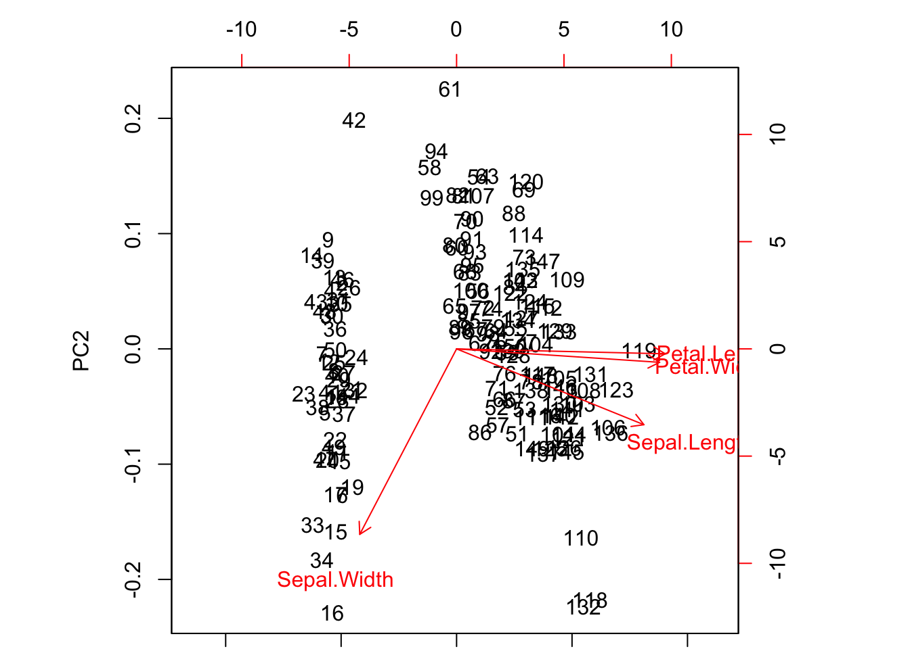
# Andrews Curves
# load library
library(andrews)
# load dataset
data(iris)
# generate andres curves
andrews(iris, clr=5, ymax=3)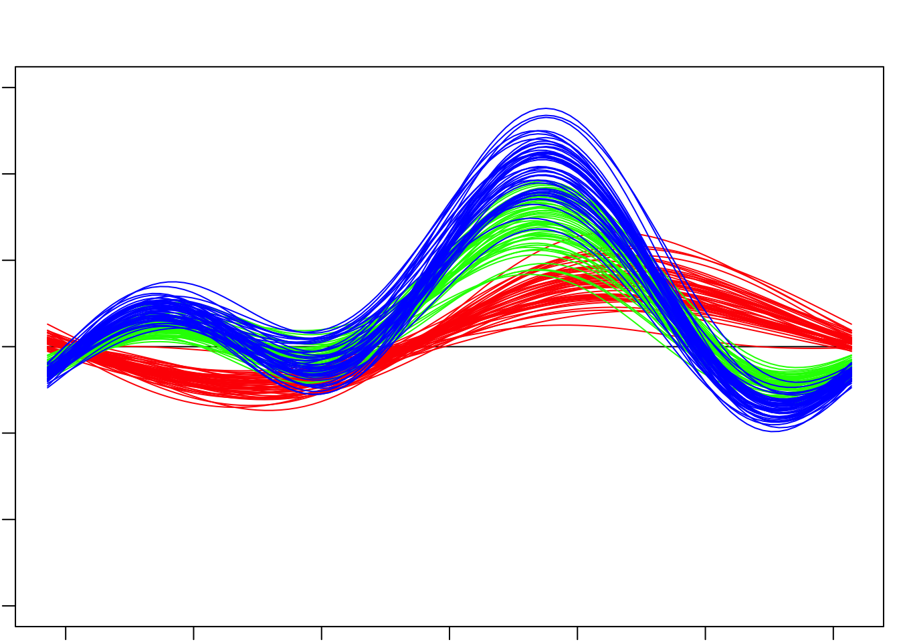